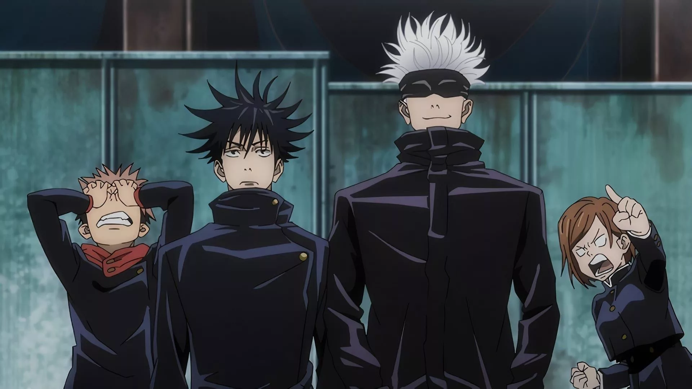
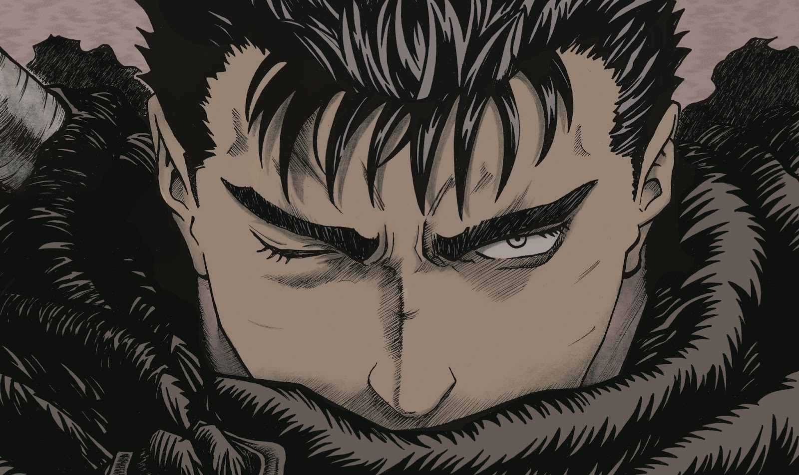
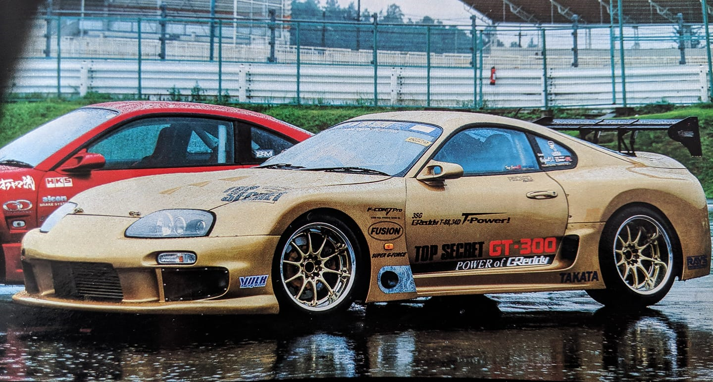
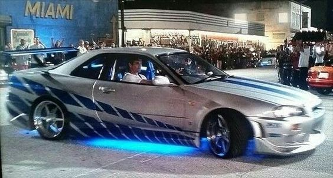
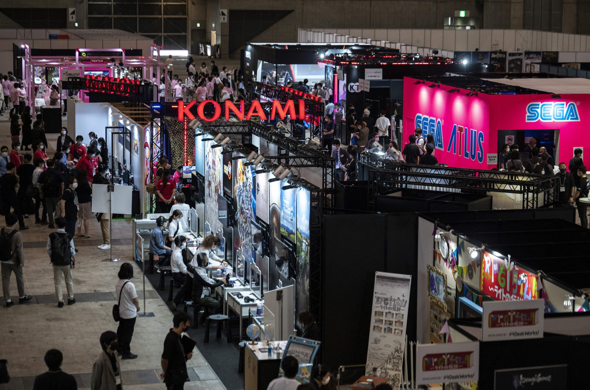

Cultura de Tokyo
Tokyo é um epicentro cultural vibrante, onde tradição e inovação se encontram. Abaixo, exploramos brevemente alguns dos aspectos mais fascinantes da cultura de Tokyo, incluindo animes, JDM, cultura pop e música.
Animes e Mangás
Os animes e mangás são uma forma icônica de mídia japonesa que conquistou o mundo. Com histórias envolventes e visuais distintos, eles conseguem passar diversas visões de mundo, mudando sua perspectiva sobre a realidade e a vida. Um bom exemplo de anime é "Jujutsu Kaisen", e de mangá, "Berserk".
Jujutsu Kaisen
Berserk
Carros JDM
Os carros JDM (Japanese Domestic Market) são famosos por seu desempenho e design exclusivos. Modelos como o Supra GT300 do grande Smokey Nagata, ou o Nissan Skyline do Brian exemplificam a paixão japonesa por inovação automotiva.
Supra GT300
Nissan Skyline
Droga, é o Braia...
Cultura Pop
A cultura pop japonesa, incluindo mangas e produtos de entretenimento, tem um impacto significativo no mundo todo. Tokyo é o coração dessa cultura, promovendo eventos e convenções que atraem fãs de diversas partes do globo.
Tokyo Game Show
Música
A cena musical de Tokyo é tão diversificada quanto a cidade. De J-Pop a música tradicional, Tokyo oferece uma gama de estilos que vão desde artistas pop internacionais até músicos locais que preservam a herança cultural japonesa. Um exemplo é a banda de metal japones, Babymetal.